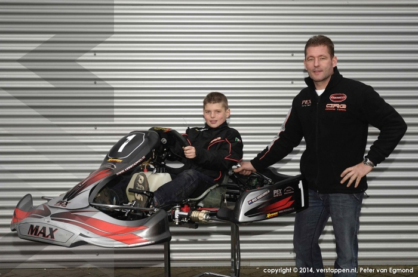

Max Verstappen
| Team | Red Bull Racing |
|---|---|
| Home Country | Netherlands |
| Date of Birth | 9/30/1997 |
| Place of Birth | Hasselt, Belgium |
About
Max Verstappen is the youngest driver to ever enter Formula 1 and he did so when he was 17 years old with the Toro Rosso team (now known as AlphaTauri). He then was promoted to the senior team of Red Bull racing. He won his debut race for the team and became the youngest driver to win a race when he was just 18 years and 228 days old. At age 24 he became a world champion and is the first driver to win this title for the Netherlands.
He is the son of Jos Verstappen who was a former F1 driver and his karting mom Sophie Kumpen. His first cousin once removed is Anthony Kumpen who competed in endurance racing and is a two-time NASCAR Whelen Euro Series champion. He has known and been surrounded by racing all of his life.
Early Career
Karting
Max was very dominant in his karting days. in years 2006, 2007, and 2009 he won each of the championships that he entered. In 2010 he finished second to Alexander Albon in the KF3 World Cup. Of the 29 championships that Verstappen entered, he won 23 of them and those that he didn't win he was still standing on the podium in second place or for one championship he took third place. To say that Verstappen was dominant in his karting career would be an understatement.
Formula 3 and Toro Rosso
At just 16 years old, he won the Formula 3 championship and claimed 6 consecutive wins in the series. Most drivers move up to the Formula 2 series after successes in F3 but he skipped that step and became the youngest driver signed to a Formula 1 team in 2015. During that season he scored 49 points and finished as high as 4th place in two races.
Photos
